Table of Contents
I. Introduction
Thank you for taking the time to review my portfolio.
I've included a collection of recent (since 2013) projects: some are academic, some are completely extracurricular and personal. In essence, I'd like to use these projects to demonstrate to you that I have the patience, technical expertise, and intrinsic motivation with which to to sustain the development of large projects and see them to completion. I think that these projects best represent my current capabilities as well as my interests; both traits that may be cultivated in the iSchool and used to succeed in the institution.
[back]II. Some Films
Below, I've collected some notable, recent movie projects that I've both edited and directed. The matter of management of persons, time, resources, and technology are all important (and demostrated below), but I'd like to divert your attention to something I find more pertinent to informatics: the ability to present information. When making a movie in any capacity, as a director, editor, actor, prop-guy, guy-with-the-microphone, or provider-of-cast-appeasing-lunches, one's primary task is the handling and depicting of information. Acting as director and editor in the compositions below, it has been my responsibility to present a final cut that conveys the story and message of the projects in a way that's compelling to the eyes and ears. I see media as a matter of instilling a desire to experience and absorb information in one's audience. If movie cuts are too fast, if the sound fluctuates too violently and doesn't match the tone, if it's as flat and boring and as warm de-carbonated cola, if the colors are as washed out as old denim, it's not finished; the information will not be properly communicated. I know that information must possess some element of clarity, readability, and purpose: this is an aptitude I bring to the field of informatics.
Rather than focus on media as a career, I'd like to blend my past-time with something useful; something applicable, like information science. The truth is, cheap, if not free, media is on tap: it's very easy to end up endlessly browsing YouTube or Netflix or perpetually playing video games. In the 21st century, your entertainment is only limited by how much dopamine you can crank out of your head. So, while I enjoy studying and producing media, I'd like to do something with more potential for positive impact (like informatics), with my efforts propelled by my technical skill.
The Battle of Marathon (Winter 2015)
As seen in Mira Green's HSTAM 205 film festival!
Essentially, we were split into groups and given a battle from ancient history, then told to produce a twenty-minute movie about it. My group was given the Battle of Marathon. The group appointed me director and editor, as I had previous experience working on experimental media at Evergreen as well as working on personal movie projects, and I really, really enjoy post-production. I like post for the same reason I like programming: armed with any amount of creativity, one has the ability to take virtually nothing and construct a nigh-infinity of digital realities.
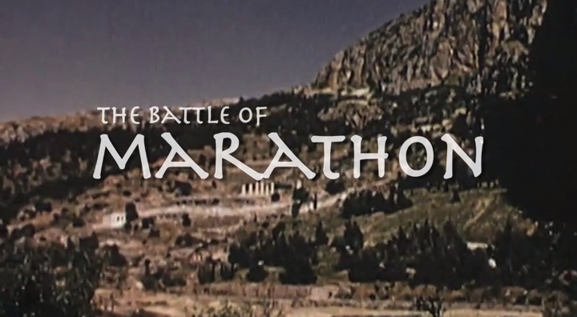
I picked up some public domain movies from archive.org to interpolate throughout the film. Seth Michels, our screenplay writer, based the script on NOVA Science Theater and the cheesy Discovery Channel documentaries with melodramatic reenactments. We decided to take the melodrama and cheese and run with it.
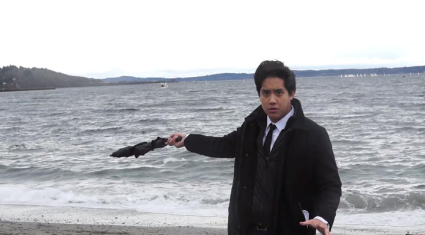
We used Golden Gardens to film our battle scenes; Marathon was located near the shores of Greece. Allegedly, the Persians were ran into the sea. This presented some challenges: for one, we had to contend with beach-goers for screentime, and two, it made sound near-impossible due to the deafening winds of the unprotected beach. I snapped lavaliers on the lapels of the cast and had them face away from the wind when talking, then washed the dialogue in Logic. We recorded some of the narration in the halls of the aerospace department. Hey, it was quiet.
We lost so many actors. Initially, a substantial chunk of our 14-person group dropped the class (this wasn't unique to our group, though). This was followed by a veritable plague of colds that intermittently knocked out several important cast members. We resorted to having the same Persian killed thrice in the final battle scenes. I fell ill on our final shoot, and spent the four hours lugging cameras around Golden Gardens coughing my lungs up through wind chill and rehearsals.
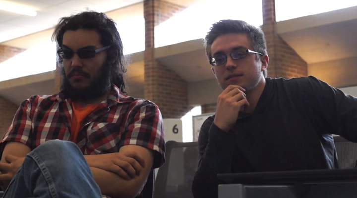
Our King Darius was the roommate of one of our historical consultants, Kenny Pham. I found some Iranian gangster rap to use as his motif. Hichkas is underrated.
The Athenians sent an emissary to Sparta to appeal for aid against the Persian forces, but the Spartans were getting turnt (or, found the festival they were throwing was more important).
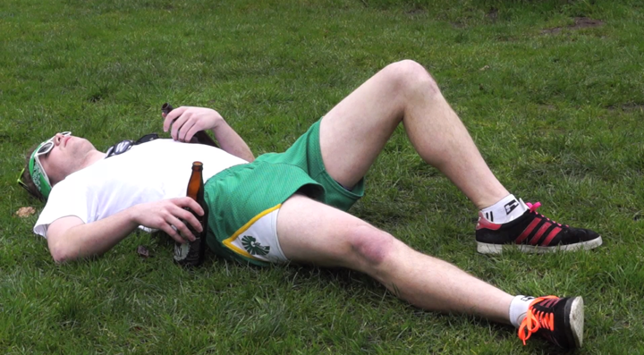
Phidippides, the emissary from which the marathon derives its name, ran so far that he died of heat exhaustion. The real guy. Not the actor.

We used ketchup for the battle scenes. A lot of ketchup. We were the only group to employ a blood substitute.
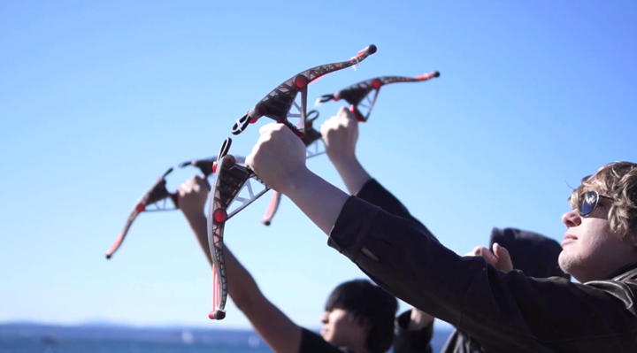
We didn't have a budget. Actors brought whatever Toys R Us stuff they had from when they were kids. One of the Athenians had a Corinthian helmet so small we had to mount it on his scalp.
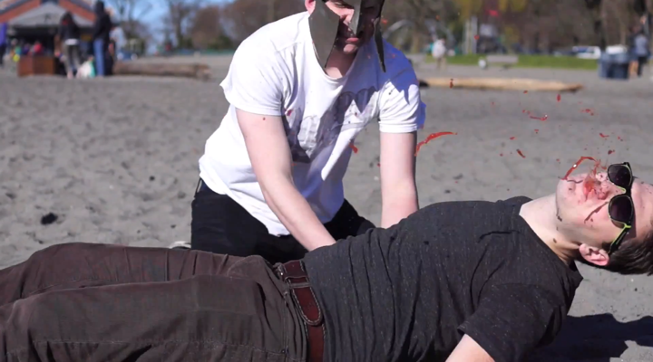
Nick, pictured above spraying ketchup from his mouth, was really proud of this scene. He managed to propel Heinz 57 over five feet, spraying the camera lens and my jacket with tomato-based condiment. It was as hilarious as it was disgusting.
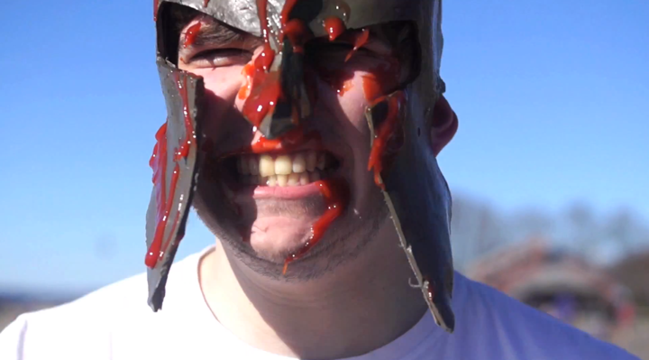
I'm really pleased with how I cut the final battle scene. It was shamelessly gratuitous.
Theo, my co-director, and I have made plans to make an RSO with the narrator and Phidippides: Low Budget History. It'll be a movie production group meant to humorously depict history and pad our portfolios.
Third Parent (Winter 2014)
Third Parent was produced for a "self-representation" project assigned by an experimental media class I took at Evergreen. Thus far, I've finished half of the film. The completed half is a survey of the role information technology and video games played in my childhood, and how my parents' exposure to technology and their parent's exposure to technology had an impact on my own relationship to technology.
The second half is to act as an antithesis to the first half. Throughout the first half (what I've embedded above) there's whimsical music, colorful visuals, and smiles all around as my parents reflect on their formative years with 1980's information technology and Space Invaders. Despite the cheery tone, there are ominous hints of insidiousness that are casually waved away. The second half is intended to make due on these hints, the thesis being that with the endless convenience and entertainment yielded by technological evolution, there are tradeoffs. In essence, a significant portion of my generation was raised with a "third parent," and that it's up to us to use this experience to determine how the ubiquity of technology will affect our children, and so on.
The class asked for an 8-minute video: I completed and screened 8 minutes, then continued working on the film after the quarter had ended.
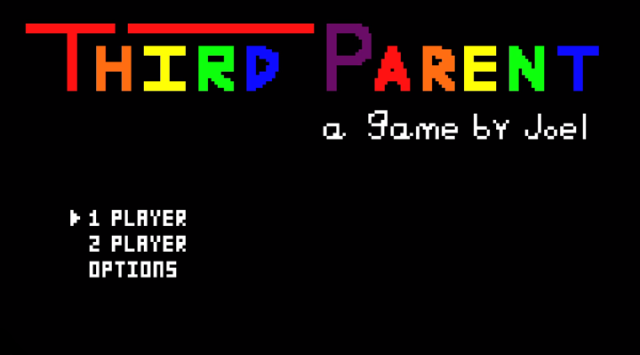
I drew the pixel-animations, frame by frame, in Pixen at a multiple of 1080px, then transferred each frame to Pixelmator and blew them up to 1080px, thus producing the 8-bit effect. While time-consuming, I'm pleased with the results.
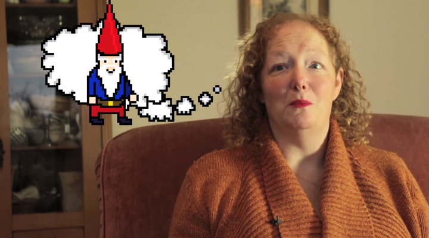
I wanted to give the impression of virtual reality bleeding into actual reality; the two are heavily mixed throughout the movie.
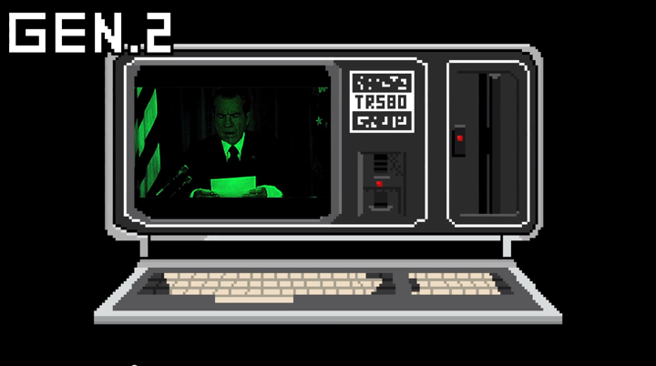
With the overview of each generation of my family came a sequence of technological and cultural developments from their formative years.

In addition to my animations, I'd blend in actual video game footage. I didn't use very much, for fear of being too derivative. If my audience wanted to watch people play video games they could just throw up YouTube and select from the infinite ocean of Let's Plays.
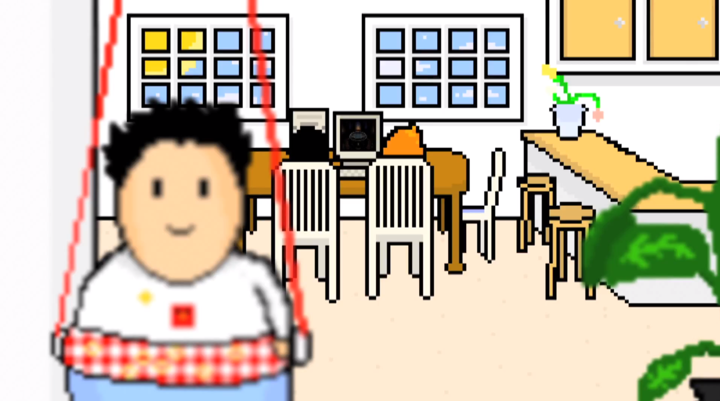
Animations were arranged in Motion; this allowed me to move elements around a "stage," creating a three-dimensional effect whenever the virtual camera was panned. As seen here, I experimented with adjusting the depth-of-field.

Pictured: My father discussing hooking up my grandfather's computers and spending an entire weekend LANing Doom.
Pictured: How I imagine myself at age 2.
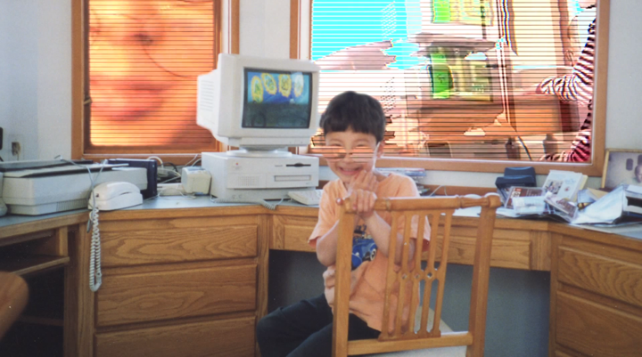
The process of recording system sound and video on OS X is actually quite convoluted. To record video game footage I used a combination of Screenflick and Soundflower.
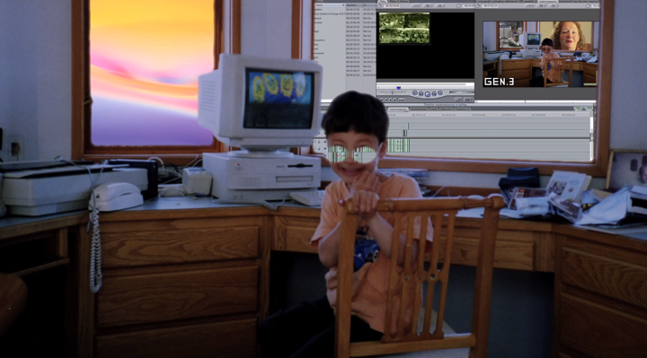
There were only two videos on the A-roll: the interview with my father, and the interview with my mother. This was by design. With so little "real life" footage, I could fill the other half of screen time with the B-roll of animation and mixed-video collage. The sparse material also compelled me to spend a significant effort designing sound. The audio in Third Parent is equally as complex as the video.
Chinese New Year Animation (Winter 2014)
If there's one project that may have shaved a few months off of my projected longevity, it's this one. This stop motion project was done by my friend, Wade, and me, for the same experimental media class I mentioned while discussing Third Parent. It doesn't look like it, as the movie's dead silent for the duration of three minutes, but both of us would stay up until four in the morning painting kites and the set. I would drive home to Tacoma from Olympia, get two hours of sleep, and one hour later, we'd be back in the animation studio. Wade wrote the subtitles, I edited the movie, and we both broke our backs over the animation table. The problem was that we shot the animation at 24 frames per second. Most groups worked at 10 or 15 frames per second, but we wanted something smoother. There's a version with sound, but it died when my laptop was bricked in a tragic tea-spilling accident. I'm much more dogmatic about keeping back-ups now.
We wanted a red title. At the time, we only had pink-tinted watercolor pens on hand. We used them anyhow, and I corrected the difference in post, colorizing the pink to look more saturated, dark, and red. The story is based on Chinese New Year mythology.

Nian required some research and plenty of pre-development sketching. The puppet was approximately a foot-long, and had the most complex articulation. The body is essentially a long, serpentine bridge consisting of connected discs emblazoned with the monster's name.
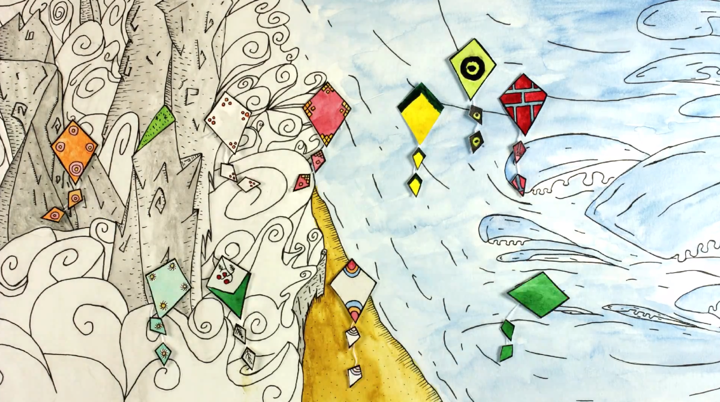
The kites were built from watercolor paper. We strung them with yarn so as to get the two-dimensional "physics" right. Pictured above is ten kites. Note that, for every single frame, we had to incrementally move each puppet and take a shot. For pans, the animation table would have to be precisely, consistently manuevered, frame-by-frame. I created the backdrop of the animation; it's one very large set with various locations we used to stage the movie.
I intentionally made the "wise old man" puppet rugged and torn-up. His exceptionally long beard doubly functions as a kite-tail, similar to the other puppets.
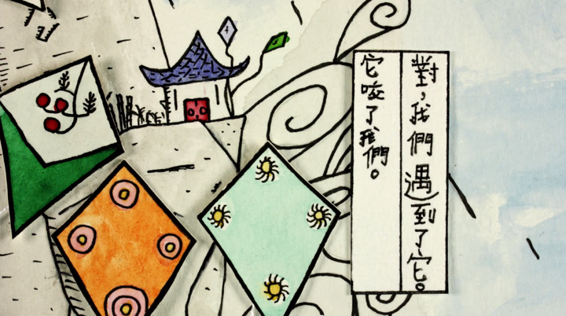
We based the patterns and designs of the puppet and the stage off of elements from one of Wade's Chinese art books.
Hippo (Fall 2014)
Hippo was a fun animation. I was experimenting with static-holds. It was intended as a prank on my class: it's completely possible to infinitely loop the animation, so while most students showed up with a 15-second animation, I turned in an 8-minute animation.
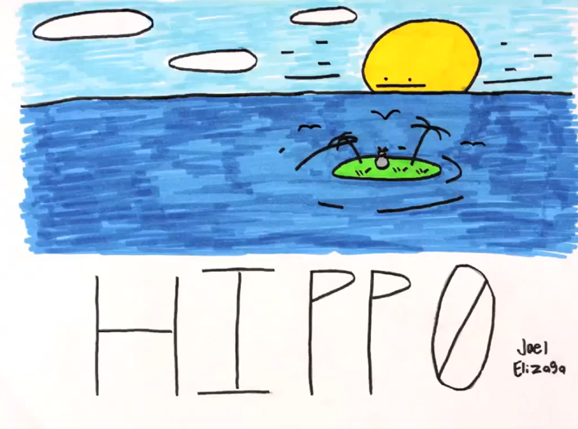
Each of the 75 frames was hastily drawn in marker.
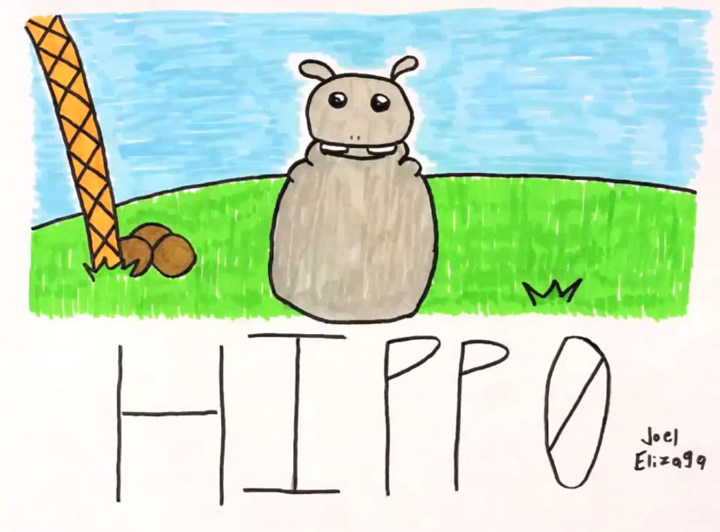
The paper was thin enough to easily trace over previous frames.
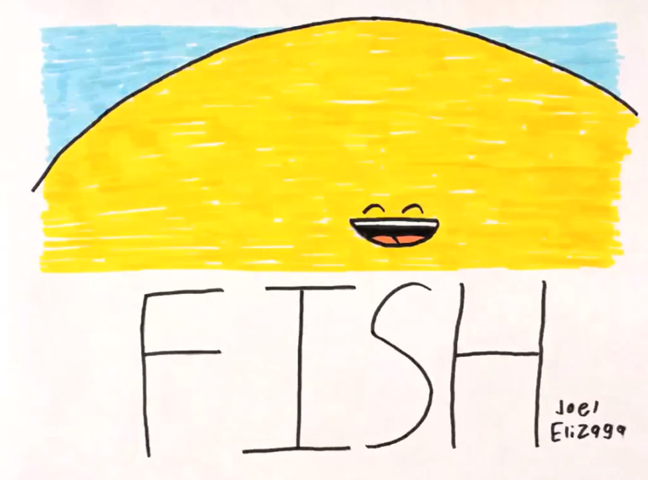
The "giant mean sun" had cameos in all of my future animation projects, and was featured in an earlier draft of Third Parent.

Here, I've pulled the camera back from the animation table; you can see the setup. The lighting of the table washed out the colors of our class's animations: I color corrected all of the projects I worked on. The saturation's boosted. Chinese New Year Animation was desaturated, so as to give it a less over-stimulating, faded style.
[back]
III. A Book
My generation was raised on hip hop; I remember running circuits in my middle school gymniasium while the laminated wood-panel floors reverberated with the guttural bass of whatever the latest Kanye West or Chris Brown song was. Since I've started college I've been building olympic-size playlists focused on various themes, locations, groups, and tropes in the genre, and hawking them off to my friends via USB or zip.
I'm no scholar, but I know enough to have written a 34-page cursory survey of American hip hop for my younger sister's 17th birthday, called Joel Elizaga's U.S. Hip Hop History Libretto. My sister and I share this semi-encyclopedic fandom, and I've taken up the duty of making sure she's always able to outwit and out-know the hip hop-heads at her prep school. It was a fitting present. I included a USB stick with all of the music cataloged in the book all properly arranged by XML and stripped of original album art (and replaced with custom art). Here's the pdf. This whole project was a matter of organizing information: history, music, imagery and text. I consider the book that I gave my sister an alpha version; there's no APA citations and all of the pictures are clearly pulled off of Google Images, and I've noticed quite a few mispellings after the print. I'd like to do a reproduction with a different, more professional- looking format than the one I cut together in Pages. Since the playlists included in the book are constantly expanding and updating, I plan on producing a second, more refined and much larger version in the future.
The book was shipped to me in a clean plastic sheet. It's exciting, seeing a digital creation made tangible. I thought to myself, Hey, I might actually be able to do this for a living.
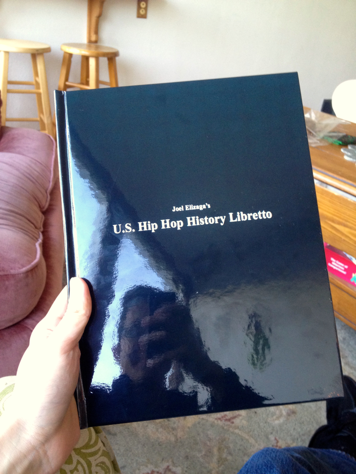
Here's the final product.
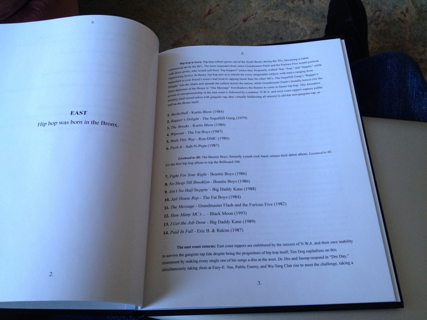
Each region includes a semi-chronological history "illustrated" by a playlist.
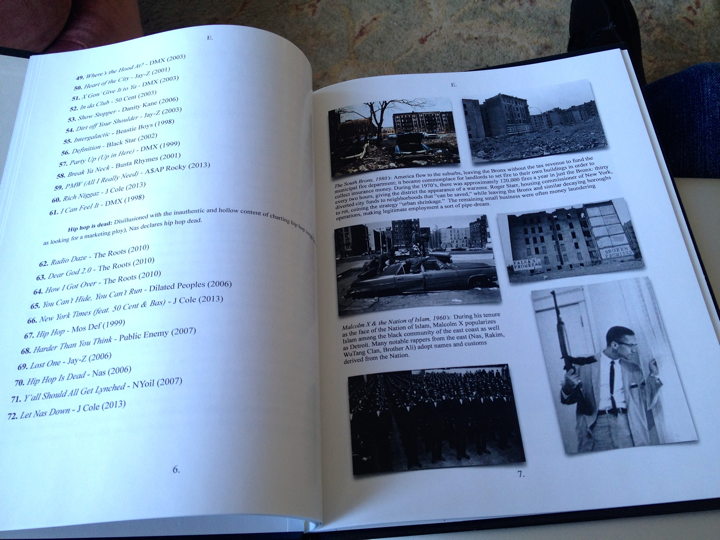
Location-based playlists were appended with color pages of assorted significant moments, locations, and people in the history of American hip hop.
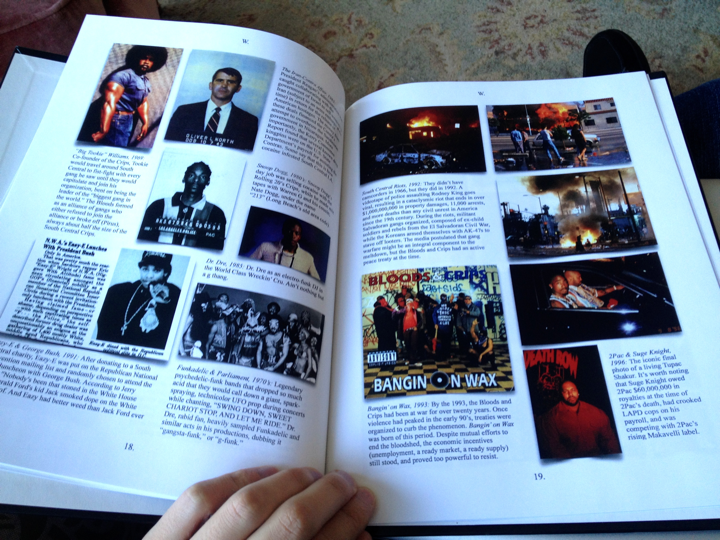
I think I might have a tendency to overuse drop-shadow. I like the physicality of it. It's like you can reach into your monitor and pluck the drop-shadowed items right off the IPS panel.
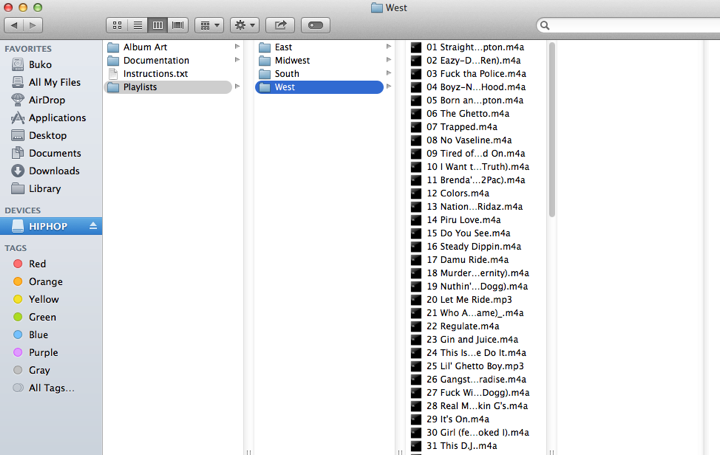
Here's what the USB I included looks like; I gave one to my sister, and kept another for myself. The typical playlist is 72 songs. Five hours. Due to their gargantuan size, I arranged the playlists by tone first and date second, rather than plain chronological order. Total, there's approximately 18 hours of music. 2.4 GB of data.
Hip hop isn't the only thing I listen to. I play bossa nova and classical music while I work because the lack of coherent lyrics doesn't break my concentration.
[back]IV. A Hackintosh
I was raised in a family of Mac loyalists. If memory serves, my dad's still got the multicolored-rainbow-Apple stickers from the 1990's that came with his PowerMac.
Now, I wasn't an Apple cultist. All of my nerdy friends ran Windows; they could play all the cool games, they never had any horrific compatability issues with ports, they could run .exes, and their computers were upgradeable and seemingly faster. Once Apple started pumping out the "Hi, I'm a Mac!" ads, a young Joel Elizaga was mortified by the sudden trendiness of his Saab-level techno-enclave.
I vowed to slap together a Windows-machine the second I could. I'll show them, I thought, Now nobody will confuse me with the technologically illiterate and blissfully artsy!
And then Windows 8 was released with the neon duplo tiles.
I decided to build a Hackintosh instead.
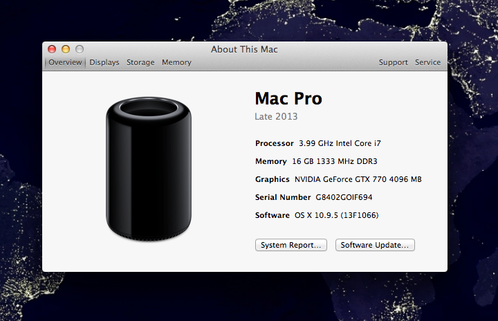
The goal was to build a machine roughly equivalent to the new trashcan-design Mac Pro at half of the $4,999 price. It's a video-editing machine, meant to cut down painful rendering times and run effects software like Motion.
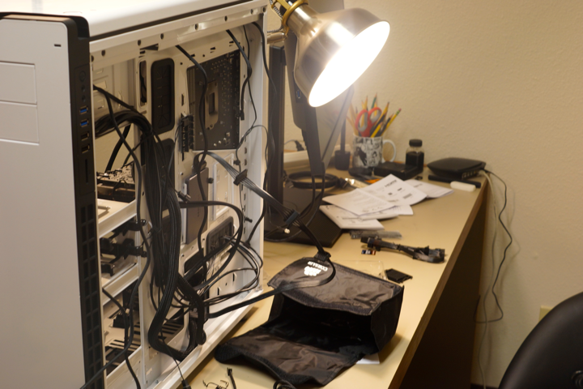
This whole procedure was performed in the cramped confines of a Stevens Court apartment. I picked up a mammoth NZXT H630 case because I had no clue how confusing cable management might be. Also, it had an SD card reader. With the inclusion of recent upgrades, the computer weighs around 40 lb. I can't stress enough how comically huge this thing is.
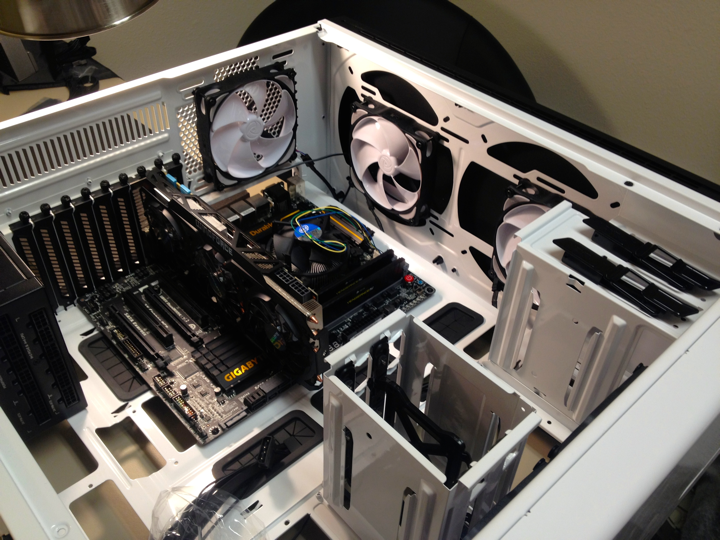
I like white. It's the color of a blank canvas. It's rather popular for custom PCs to be black-on-black, but I think that's a little depressing. Apple's machine looks like an infant subway trash can. My machine looks like a crispy refrigerator.
I dubbed my computer "Buko," in honor of the dead week I spent holed up in my room with textbooks and a pile of coconuts. I once ate three coconuts in a day. For $3, you can get all of the nutrition you need for a full meal if you're willing to spend an hour beating a coconut with a kitchen knife and/or a screwdriver. My dead week was like the first few minutes of Apocalypse Now, except with coconuts.
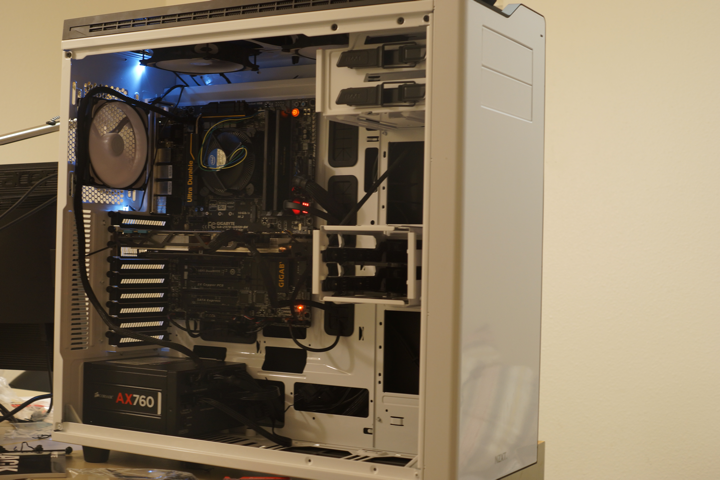
The first few installs were disasters for no apparent reason, and prone to kernel panics. It's been completely stable since summer 2014. There are some quirks; if the computer falls asleep, there'll be no sound output on wake. It never sleeps. I just shut it down, and let the monitor sleep to prevent screen burn.
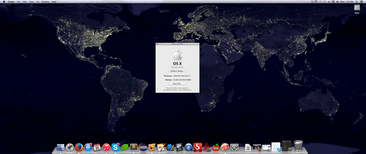
I like to keep my desktop clean. I have a 500GB SSD for housing applications and working on films, and a 4TB HD for storing finished projects, movies, and music. I know custom computers are common in gaming culture, but I haven't been much of a gamer since I started college, and OS X has always had a dubious reputation for ports anyhow.
I like it. It's got the upgradeability and future-proofing of a typical Windows tower with a competent OS that doesn't look like it was meant for a mobile phone. I've since installed a few more fans, replaced the stock CPU cooler, and slapped in a fan controller. Now all I need to do is get around to installing Yosemite. I'm not a fan of Yosemite, and Foxconn, wage-fixing, PRISM, and the new MacBook have me feeling a little guilty for supporting Apple. I'd consider switching to a Linux distro if Linux had any decent video editing applications. I've found the pathos of customizability, transparency, and DIY in Linux appealing for quite some time.
[back]V. An INFO 200 Poster
I took INFO 200 over Winter 2015; our group devised a hypothetical mobile application intended to allow users to avoid long lines on the Ave, called Ave No Wait. We designed preliminary posters, but the final design was hiked to me, because the others weren't too confident in their aptitude for design. Also, I was eager to make something, and hadn't touched watercolors since 2014. I had the group send me their text and designs, printed said texts out, and made a cohesive design that reflected their's, then painted the poster on some watercolor board I picked up at the Husky book store on the Ave.
I'm taking my mandatory composition credit over Spring 2015, but if you're looking for some authentication as to my ability to compose text, I wrote both the information problem (project introduction) and users paper.
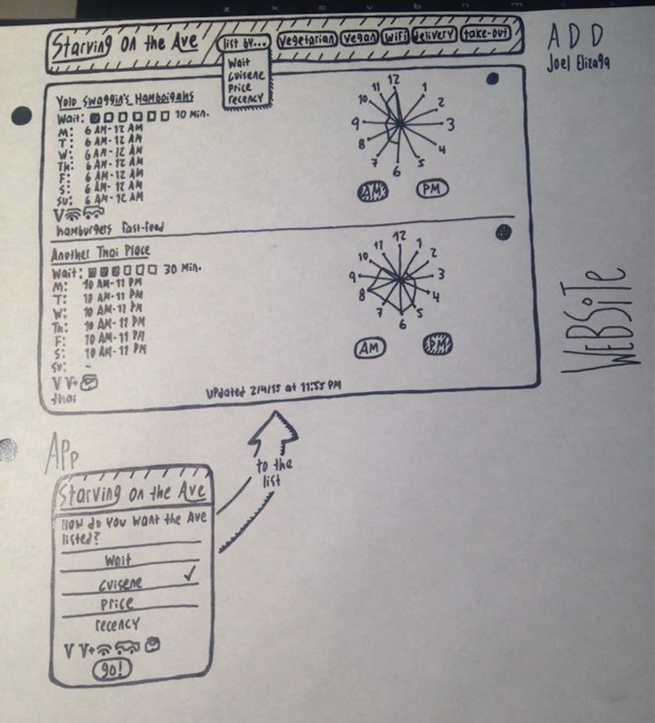
Here's my prototype design, which was based off of one Devin Bell's design. I dubbed the app Starving on the Ave, but the group preferred Ave No Wait. I meant for there to be an Ajax-based website that would automatically update, and an accompanying mobile app that would display the same statistics in a simplified format.
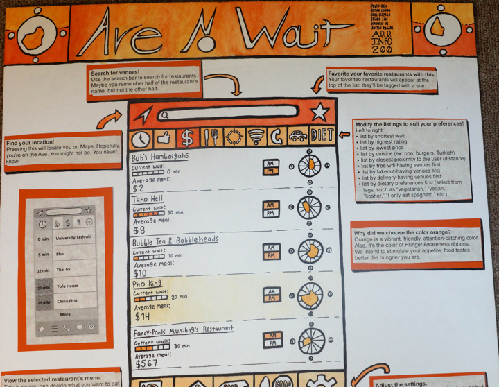
"Orange is a vibrant, friendly, attention-catching color. Also, it's the color of Hunger Awareness ribbons. We intend to stimulate your appetite; food tastes better the hungrier you are."
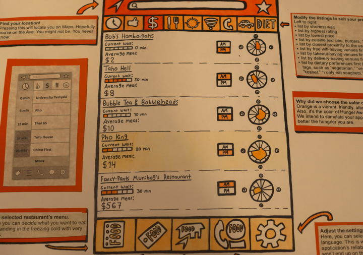
Taho is tofu sweetened with syrup. To the left you'll see Haowen Ni's design for a simplified version of the app.
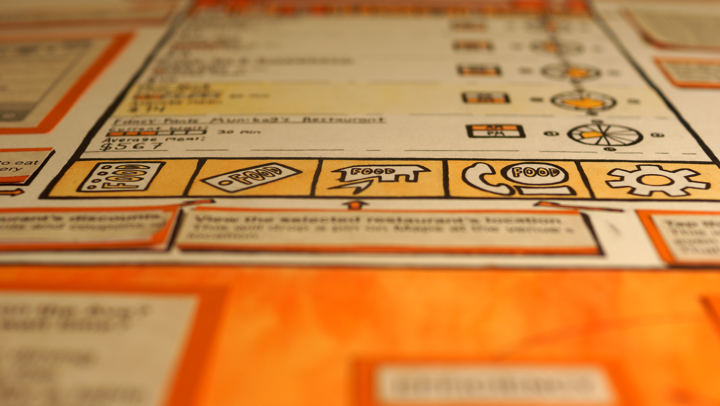
I labeled the buttons that act upon the selected restaurant with "FOOD" so as to unite them and differentiate them from the "settings" button.
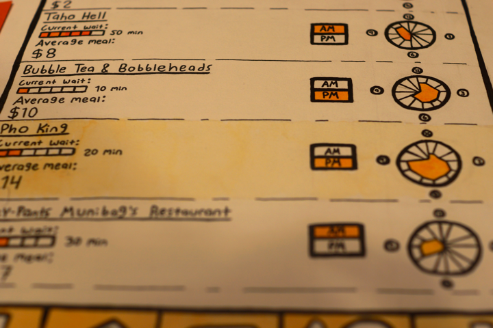
In retrospect, it would've been quicker to have made the poster in Photoshop. There'd be much less error, and it'd look cleaner. On the other hand, we were the only group with a completely "analog" poster, and the psychedelic cadmium orange drew a lot of attention.
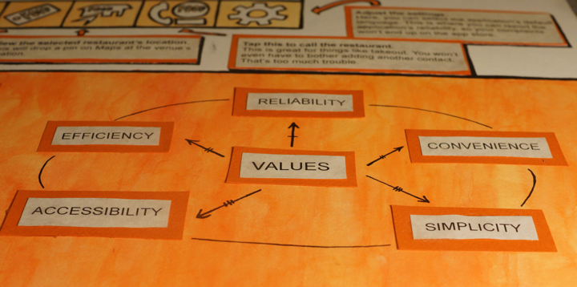
My group wanted to have a lot of values.
[back]
VI. An INFO 200 Reflection Paper
I've uploaded my INFO 200 reflection paper pdf for you to read, but if you don't want to click any links, I've even reformatted the entire essay into hypertext:
INFO 200 Reflection Paper: Hot Air & High Fives
User-Centered Design: Who are the users?
Prior to taking INFO 200, I had been printing articles on some seemingly dubious practices in the technology industry and keeping them in a large black binder. Around 2014 and the release of the Snowden revelations I became paranoid of backdoors, personal data-mining, the power of scientific social engineering and marketing, Comcast, tethering, the psychological tradeoffs of spending one's life in front of a screen, and government surveillance. To me, it had appeared that the horribly anarchic digital playground of my childhood was congealing into an insurmountable black box of omniscient technological deities endowed with the forces of big data. I began substantially cutting back on my digital footprint, wiped all of my social media, and tried my best to become some kind of ghost. I ended up with less web presence than both of my middle-aged parents and my little sister. At some point, I figuratively threw up my hands, thinking, "Man, this technology sucks, and I can't click a thing without feeling marginally exploited. Doesn't anybody give a damn about the users anymore? I feel Google's colorfully corrosive and rancid breath down my spine at every turn. I can't escape."
Then I took INFO 200, learned about Batya Friedman's Value-Sensitive Design theory, and was relieved to find that people contemplate the values of users sometimes. I was a little incredulous that VSD was even a concept. I took this class, and I'm aiming for Informatics, and I'm studying programming, all so that I can have some say and participatory presence in the direction of technology and information science. I want to be able to make software and systems that respect the users and aren't harmful at the very least, and is helpful and enriching at the very best. Essentially, I was looking for some perspective similar to VSD. Then again, who are the users? Are the users shareholders and programmers, or are the users consumers? These two camps often have conflicting values and desires at odds with each other.
The Social Side of Technology: Is it worth it?
Admittedly, I'm cynical. If the human species truly valued privacy as much as we so loudly purport, I don't think Mark Zuckerberg would be as wealthy a man as he is. Who's to say that privacy is a virtue or that humans shouldn't yield self-control to Google's brilliant, top-secret marketing algorithms? Are the values that we readily claim to uphold in practices such as VSD true human values, if they're not so pervasively respected or aspired to? If our species would like to trade their digital privacy for digital friendships and endless entertainment, who's to say that it's wrong? What is wrong? Can wrong be measured?
Legal & Ethical Issues: Is it empty rhetoric?
Ethically, I think that the true takeaway of INFO 200 and the past few years since the PRISM break is that information is a manifestation of power--it is power--scientia potentia est. We discussed gender, cultural, and ability perspectives, values, the behavior of information, the capability of information to both do harm and aid others: the capability of information to save, heal, manipulate, deceive, exploit, monetize, convenience, satiate, and starve. What I understood was, "Information is more powerful and alluring than spices, salt, oil, and gold. Some people have lots, some people have less, some people have none; it's stored in our bodies and our external devices, and its trade and distribution has an enormous impact across our species, from corporate espionage to basic literacy." When the collection, sharing, denying, twisting, and selling of information effects even the most inane details around us, it becomes the human's duty to wield it ethically, or, at least, for the benefit of the species. Whenever iTunes forcefully updates and gets subjectively hilariously worse and invasive, and I switch browsers and can't use Adblock to hide from YouTube's obnoxious commercials, I wonder, though, "Are we, as a species, really going to wield it ethically, or is this just hot air and high fives?"
[back]